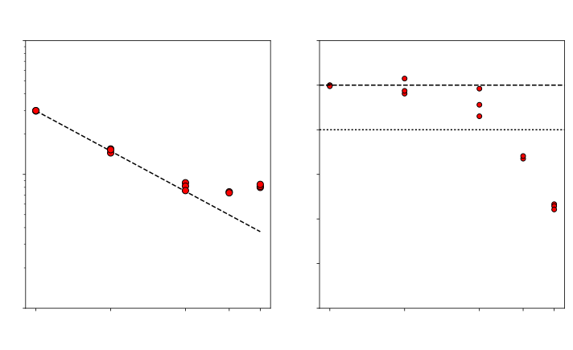
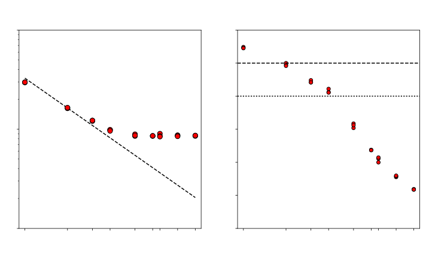
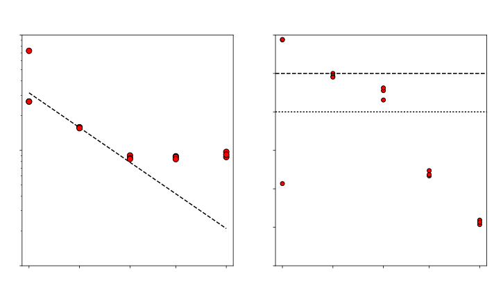
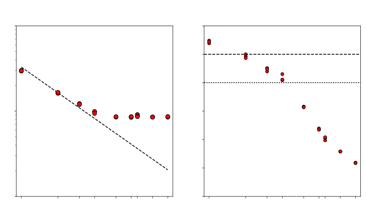
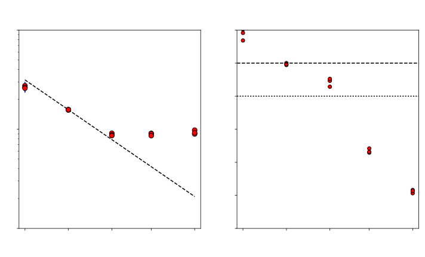
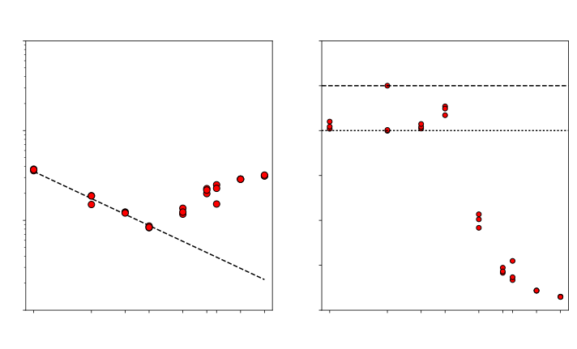

Scaling analysis of ACCESS-CM2
Marshall Ward
National Computational Infrastructure

NCI Optimization Project

- ACCESS profiling:
- UM
- MOM
- CICE
- ROMS
- WAVEWATCH
- Expansion to new fields
- Landsat processing
- Lattice QCD
- Magnetotellurgy
- Bioinformatics
- Tools and methodologies
ACCESS-CM2
- Australian Community Climate and Earth System Simulator
- Submodels
- Unified Model (UM) 10.3 (GA7 core)
- Los Alamos Sea Ice Model (CICE) 5.1
- Modular Ocean Model (MOM) 5.1
- OASIS3-MCT 3.0
- Contributors
- Daohua (Dave) Bi: Lead developer
- Simon Marsland: Team leader
- Arnold Sullivan
- Hailin Yan
CM2 coupling layout
(Source code order)
UM
- Recv. from CICE
- Update UM
- Send to CICE
CICE
- Recv. from MOM
- Recv. from UM
- Send to MOM
- Update CICE
- Send to UM
MOM
- Send to CICE
- Update MOM
- Recv. from CICE
CM2 coupling layout
(Scheduling order)
UM
- Send to CICE
- Recv. from CICE
- Update UM
CICE
- Recv. from MOM
- Recv. from UM
- Send to MOM
- Update CICE
- Send to UM
MOM
- Send to CICE
- Update MOM
- Recv. from CICE
Model configuration
UM
- 192 x 144 (1°)
- 85 levels
- 1200 s
CICE
- 1440 x 1080 (¼°)
- 5 ice classes
- 450 s
MOM
- 1440 x 1080 (¼°)
- 50 levels
- 450 s
UM - CICE
- UM to CICE: 38
(1200 s lag) - CICE to UM: 17
(450 s lag)
CICE - MOM
- CICE to MOM: 46
- MOM to CICE: 9
Profiling with Score-P
UM internal scaling

CICE internal scaling

MOM internal scaling

MOM internal scaling (MOM-SIS)

Internal scaling summary
| Submodel | High eff. | 80% eff. | Low eff. | |||
|---|---|---|---|---|---|---|
| CPU | Time | CPU | Time | CPU | Time | |
| UM | 192 | 95.2 s | 432 | 62.0 s | 768 | 50.7 s |
| CICE | 96 | 151.2 s | 192 | 78.6 s | 360 | 48.8 s |
| MOM | 480 | 154.7 s | 960 | 78.0 s | 1920 | 47.0 s |
Atmosphere scaling (Atmosphere)
Atmosphere scaling (Ice)
Atmosphere scaling (Ocean)
Ice scaling (Atmosphere)
Ice scaling (Ice)
Ice scaling (Ocean)
Ocean scaling (Atmosphere)
Ocean scaling (Ice)
Ocean scaling (Ocean)

Atmosphere coupling

Atmosphere coupling
Atmosphere coupling
Atmosphere coupling
Ice coupling

Ice coupling

Ice coupling

Ice coupling

Ocean coupling